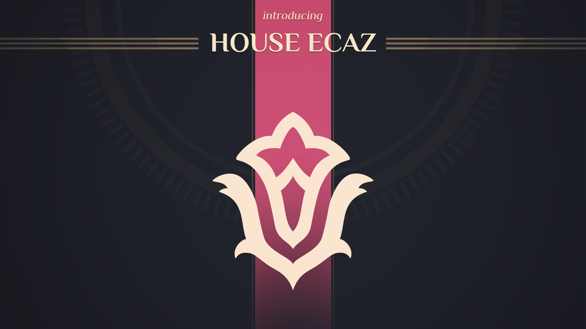

House Ecaz
House Ecaz is known for it's touristic resorts, it's recreational drugs, and it's patronage for the Art. But behind this enticing exterior, the refined house and it's no less refined ruler, Archduchess Armanda, are ruthless and efficient defenders of their interests.

House Harkonnen
House Harkonnen shares its chilling reputation with its leader, Baron Vladimir Harkonnen. They have been called despotic, merciless, scheming and devious. And those are only their finer qualities.

Fremen
Fremen are the only people native to Arrakis and will do anything to protect their way against the offworlders. While their leader, Liet-Kynes, doesn’t originally come from Dune, she is every bit as determined and attached to the planet as the next Fremen.

House Corrino
Imperial House Corrino has ruled the galaxy for ten millenia, and Shaddam IV intends to keep it that way. The situation on Arrakis calls for the direct intervention of the Padishah Emperor, who will use all His wit and the might of His administration to turn the war to His benefit.